IMR、TBR、Pipeline…
推荐阅读：
硬件架构
如果仅从 CPU、GPU、Memory 三者的角度考虑硬件架构，那么可以分为如下两类：
- （左）分离式架构，CPU和GPU有各自独立的内存和 Cache，通过
PCI-e总线通讯。其特点是：高带宽、高延迟，性能瓶颈是数据传输。主要应用于 PC 和 手机。 - （右）耦合式架构，CPU和GPU共享内存和 Cache。主要应用于 PS4 等游戏主机。
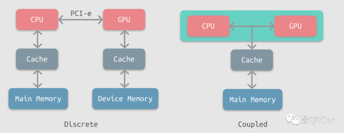
IMR
Immediate Mode Rendering，通常指 PC 端的GPU渲染架构，其特点是：所有渲染管线中的读写操作，都直接由 GPU(紫色) 和 显存(深灰色) 之间完成，如图所示：
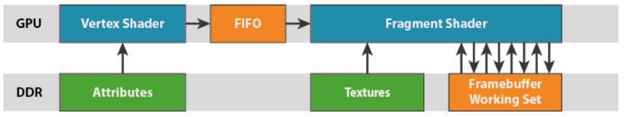
其中 ↑ 表示读取显存，如 Vertex 阶段需要读取 几何（顶点）信息，而 ↓ 表示写回显存，如 Visibility 测试阶段需要写 Depth-Buffer。这些会带来巨大的带宽开销，IMR结构通过引入 L1、L2 Cache 之类的结构来尝试优化这部分带宽。
移动端
- 由于 高带宽 导致的 高功耗，IMR架构对 移动端 的 性能 是致命打击！
- 因此 移动端 大都选择 性能友好 的TBR架构
如何理解 GPU 的 高度并行化?
- 参考阅读: ##GPU 架构发展历史
- 假设 GPU 每个 core 一次只处理一个 vertex，（NVIDIA架构）每个 SM 中包含 32 个cores，那么就可以同时处理 32 个 vertex，这些统一称为一个
Warp - 因此 Warp 的数量直接决定 GPU 的性能
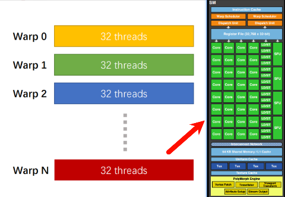
- 问题：
Warp之间是可以并行执行的吗？为什么图示是并发执行呢？
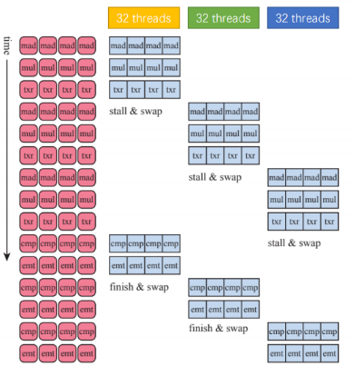
- 光栅化阶段，最小单位是一个
Quard（即包含4个像素）。以下图为例，其中绿色表示通过光栅化，黄色表示因为Quard而被保留的像素。 - 之所以使用
Quard的形式，是因为便于计算ddx, ddy。这个在计算 mipmap 的时候有奇效。
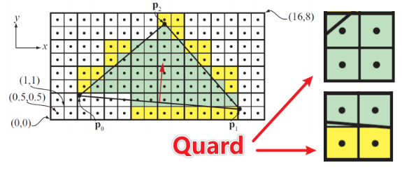
TBR
Tiled Based Rendering，一般用于移动端GPU（例如 Mali），通过引入 Tiled Memory 降低带宽的读写功耗。
- 优化点：先写
Tiled Meomry，再实现Blend…，最后再写入DDR - 参考阅读：[译]The Mali GPU: An Abstract Machine, Part 2 - Tile-based Rendering | Litmin的笔记
- 参考阅读：剖析虚幻渲染体系（12）- 移动端专题Part 2（GPU架构和机制） - 0向往0 - 博客园
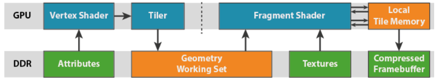
很多及计算机技术，都是通过引入一个中间件，TBR架构就是典型的例子。
- 面对一个巨大的汉堡，一口吞不下去（IMR带宽高）
- 尝试将汉堡咬成多个小口，慢慢吃下去（TBR低带宽）
Index-Driven Vertex Shading (Mali)
IDVS 是 Mali GPU 的优化技术，考虑到传统的 vertex shading，即使经过 50% backface culling（也可能是 frontface culling），顶点的写入数量也剩 50%：
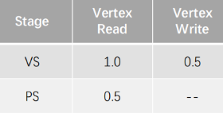
优化关键点在于，既然有 50% 顶点是注定要被 Culling 掉的，那么为什么要写入内存呢?
因此 Mali GPU 将 Vertex Shading 细分为两个阶段，分别是：
Position Shading：位置着色，发生在 Culling 之前，只转换顶点位置，因此输入只有 posVarying Shading：可变着色，发生在 Culling 之后，只处理通过 Culling 的顶点的其他信息、操作
假设 顶点 Vertex 的分布是，按照 pos、npos 的比例为 1:1：（通常情况更为复杂，eg. position、uv、normal …）
- 缺陷是：需要CPU将这些信息分开存储
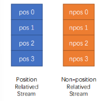
那么 IDVS 技术起码节省 50% 比例的 npos：
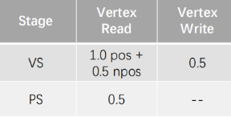
进一步分析，通常 Varing shading 开销一定是大于 Position Shading，所以 拆分两阶段，能够让 Varing shading 充分享受到 Culling 的收益。
Binning Pass (Adreno)
参照前文，既然某些 Vertex 压根不会参与最终的渲染，那么有没有可能，这些都不用写到内存呢？（节省掉 0.5 Vertex Write）。
Adreno 引入一个 Binning Pass 的技术，在 Vertex Shading 阶段（同样先是只处理 pos），将所有的 visibilty 写到内存中，避免了顶点信息的写入。
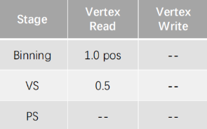
Adreno 基于 Binning Pass 的渲染架构如下图，继续悟一悟：
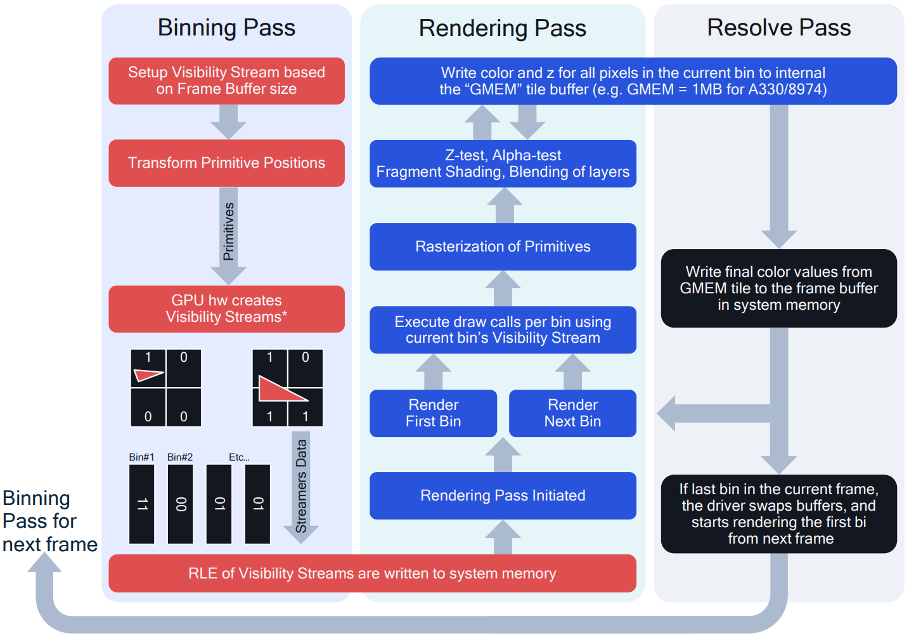
Hidden Sureface Removal (PowerVR)
HSR 可以直接理解为 隐藏表面的剔除，传统的 OverDraw 是通过 Early-Z 避免，而 HSR 可以无视绘制顺序避免 OverDraw。
- 如下由远及近绘制时，不会对遮挡的像素进行任何剔除，但是 PowerVR 做到了！
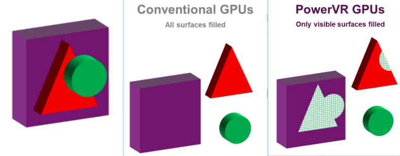
HSR 实际做法是，在光栅化之后，写入一个 Depth-Buffer(降分辨率) 到 Tiled Memory，在后续的深度测试中也会依据它进行一些 Culling。
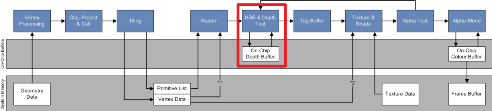
RenderPass
对于 RenderPass 的定义：对于渲染管线的一次完整执行（连续地往 FrameBuffer 绘制对象的一组行为），如下：
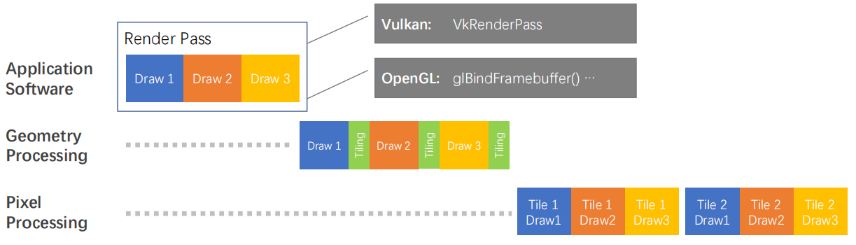
RenderPass 的组织形式对于性能影响非常大，如下绘制一个Scene（电视机中是另一个Scene的画面）：
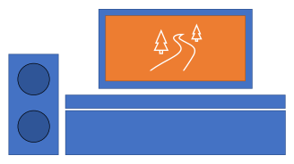
下图展示了两种绘制方式：
- 左侧：3 Pass，先绘制音响，后从 FrameBuffer 切到另一个 RenderTarget，来绘制另一个Scene，接着再切回 FrameBuffer 绘制整个Scene
- 右侧：2 Pass，先绘制另一个Scene到某个RenderTarget上，然后切回 FrameBuffer，绘制音响和电视，并将之前的 RenderTarget 当做 Texture Load 过来即可
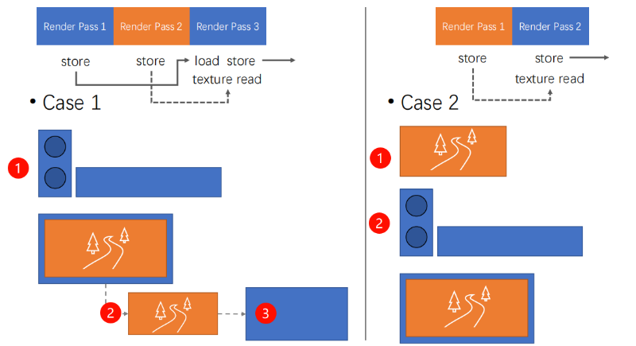
分析以上两者的绘制开销：
- 左侧：3 x store，2 x load
- 右侧：2 x store，1 x load
由于 Load/Store 操作依赖带宽的开销非常高，因此 2 Pass 的方案显然性能更加友好。
Frame Graph
为了优化 Render Pass 的绘制顺序，更好的配置 Load/Store 的关系，可以引入 Frame Graph 一种有向无环图：
- 有利于渲染并行、排序
- 有利于性能优化，降低 Load/Store 开销
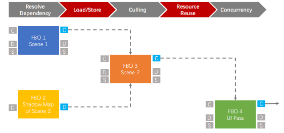
Compute Pipeline
Compute Pipeline 的意义：
- 在多线程组（thread group）之间共享内存。eg. 在一个
Quad内计算sum, agg ... - 读写 Buffers（例如 FrameBuffer、顶点数组 …）
如下是一个 DX12 的渲染管线示例：
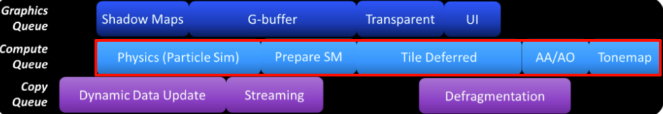